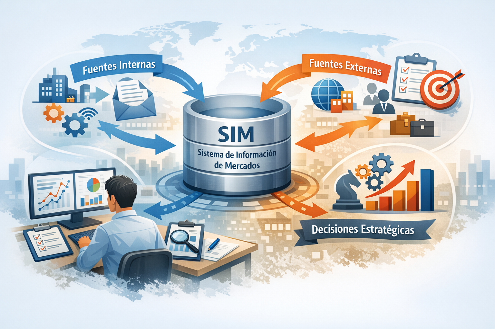
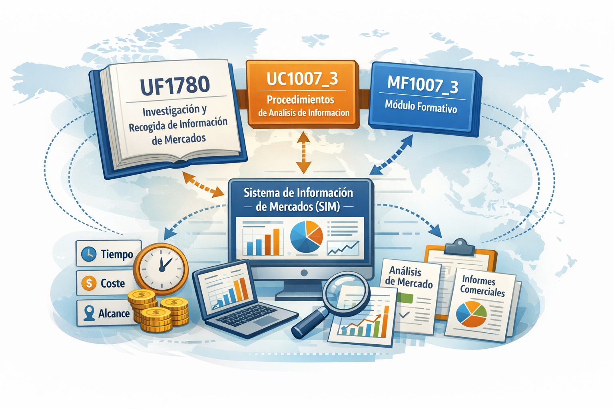
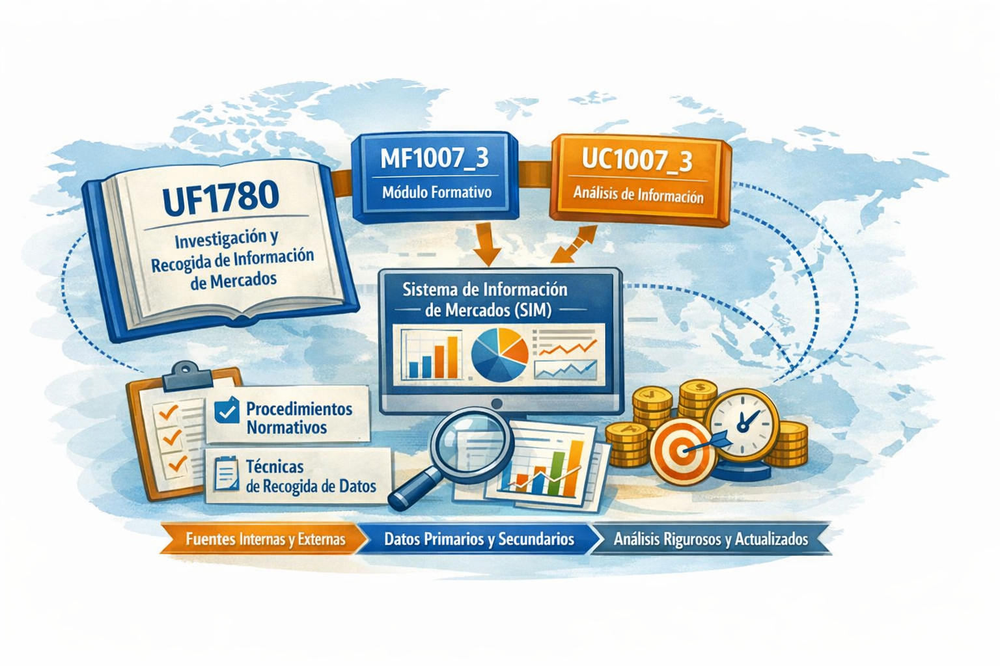
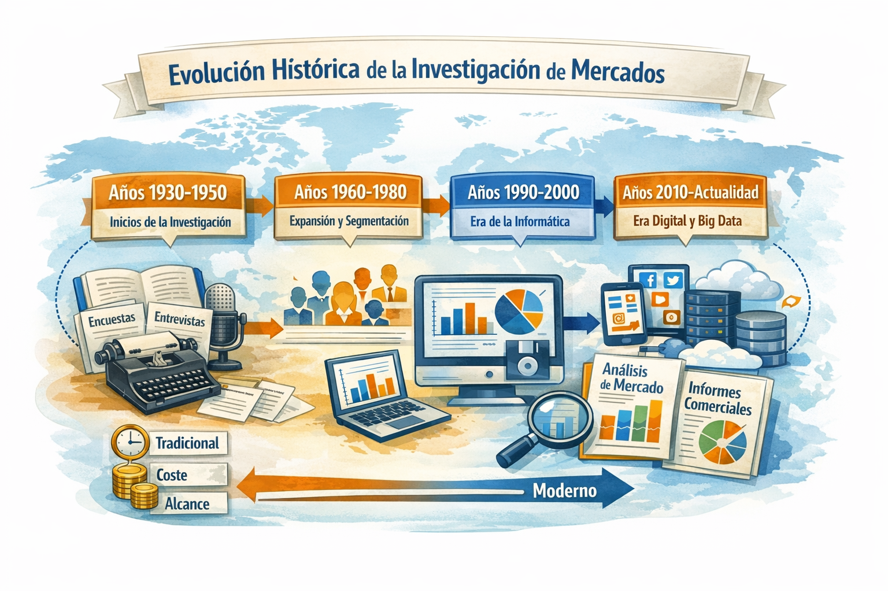
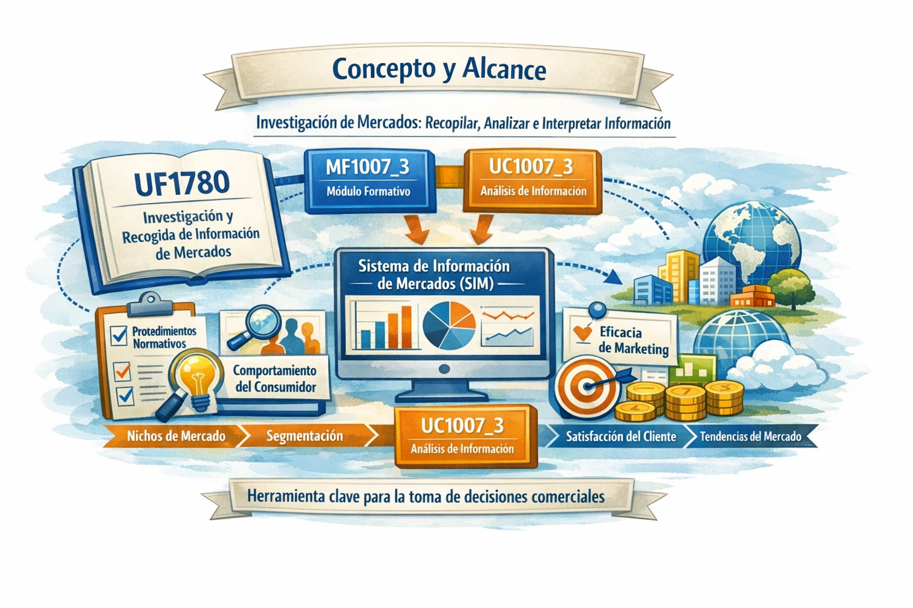

🧠 Idea clave de este paso
En una introducción académica para la UF1780, después de explicar qué es la investigación de mercados, lo siguiente que debe aparecer es:
👉 La relación entre la investigación de mercados y el Sistema de Información de Mercados (SIM)
porque la normativa dice explícitamente que esta unidad formativa se centra en:
- Obtener información fiable
- Seleccionar fuentes internas y externas
- Organizar datos para el SIM
- Garantizar exactitud y control
test visibility REDprueba
Esto aparece en el documento cuando se menciona que “la información necesaria se extrae de las fuentes seleccionadas valorando su idoneidad” y que “la información se organiza aplicando criterios establecidos”.
Con esa idea clara, ahora sí continuamos la redacción.
La normativa del certificado de profesionalidad COMM0112 establece que esta unidad formativa se centra en la correcta obtención y gestión de la información necesaria para alimentar el Sistema de Información de Mercados (SIM). Para ello, el profesional debe dominar una serie de procesos esenciales que garantizan la fiabilidad y utilidad de los datos recopilados.
📌 Procesos fundamentales según la normativa
- Obtener información fiable, evaluando la calidad y pertinencia de los datos.
- Seleccionar fuentes internas y externas, valorando su idoneidad para los objetivos del estudio.
- Organizar datos para el SIM, aplicando criterios de clasificación, registro y tabulación.
- Garantizar exactitud y control, mediante procedimientos que permitan detectar errores o inconsistencias.
Estas exigencias se reflejan en la UC1007_3, donde se indica que “la información necesaria se extrae de las fuentes seleccionadas valorando su idoneidad” y que “la información se organiza aplicando criterios establecidos”. Esto demuestra que la investigación de mercados no es un proceso aislado, sino un componente estructural del SIM, cuya eficacia depende directamente de la calidad del trabajo realizado en esta fase inicial.
Comprender esta relación entre la investigación de mercados y el Sistema de Información de Mercados (SIM) permite situar la UF1780 dentro del marco general del módulo MF1007_3. La investigación de mercados constituye la fase inicial del proceso, en la que se determina qué información es necesaria, de dónde debe obtenerse y cómo debe organizarse para que resulte útil en etapas posteriores.
Sin una correcta obtención y estructuración de los datos, no sería posible aplicar técnicas estadísticas, interpretar tendencias del mercado ni elaborar informes comerciales que faciliten la toma de decisiones. Por ello, la normativa insiste en que el profesional debe ser capaz de evaluar la fiabilidad de las fuentes, detectar posibles errores o inconsistencias y garantizar que la información recopilada responda a las necesidades reales del sistema de información comercial de la organización.
De este modo, la investigación de mercados no solo aporta datos, sino que establece los criterios metodológicos que aseguran la calidad, coherencia y utilidad de la información. Esta perspectiva es esencial para el desarrollo de competencias profesionales vinculadas a la UC1007_3, donde se exige dominar procedimientos de búsqueda, registro, organización y verificación de información para apoyar la toma de decisiones empresariales.
En síntesis, comprender la relación entre la investigación de mercados y el Sistema de Información de Mercados (SIM) permite reconocer la importancia de esta fase inicial dentro del proceso de análisis comercial. La UF1780 proporciona las bases metodológicas necesarias para garantizar que la información recopilada sea precisa, relevante y útil, mientras que la UC1007_3 establece los criterios técnicos que aseguran su correcta integración en el SIM. Con esta base conceptual, es posible avanzar hacia etapas posteriores del módulo MF1007_3, donde la interpretación, el análisis estadístico y la elaboración de informes dependen directamente de la calidad del trabajo realizado en esta fase de obtención y organización de datos.
📊 Visualización del SIM
La siguiente imagen representa el flujo de información entre fuentes internas y externas hacia el Sistema de Información de Mercados (SIM), y cómo este sistema apoya la toma de decisiones estratégicas dentro del proceso de investigación de mercados.

Esta representación sirve como base conceptual para comprender cómo se estructura el flujo de información en el SIM, y cómo este sistema se convierte en el eje central de la investigación de mercados.
✨ Continuación académica de la introducción (segundo bloque)
Redacción original basada en la normativa, sin copiarla textualmente.
En este contexto, la unidad formativa UF1780: Investigación y recogida de información de mercados profundiza en los procedimientos necesarios para obtener datos precisos y estructurados que alimenten el Sistema de Información de Mercados (SIM) de la organización. Este sistema constituye un elemento esencial para la toma de decisiones estratégicas, ya que integra información procedente de fuentes internas y externas, primarias y secundarias, permitiendo analizar el entorno comercial con criterios de rigor y fiabilidad.
El estudio de mercado, por tanto, no se limita a la mera recopilación de datos, sino que exige identificar las variables relevantes, seleccionar las técnicas de obtención más adecuadas y evaluar los recursos necesarios —tiempo, coste y alcance— para garantizar que la información obtenida sea válida, representativa y coherente con los objetivos comerciales. Esta perspectiva coincide con los requerimientos de la UC1007_3, que establece la necesidad de aplicar procedimientos sistemáticos de búsqueda, registro y organización de la información, asegurando la calidad y actualización permanente de los datos que conforman el SIM.
Además, la UF1780 constituye la base metodológica sobre la que se apoyan las siguientes fases del módulo MF1007_3, ya que sin una correcta obtención y estructuración de la información sería imposible realizar análisis estadísticos fiables, interpretar tendencias del mercado o elaborar informes comerciales que faciliten la toma de decisiones. La normativa del certificado de profesionalidad subraya que la calidad del SIM depende directamente de la precisión con la que se identifican las fuentes de información, se aplican las técnicas de recogida y se controlan los procedimientos de registro y tabulación.
En consecuencia, esta unidad formativa no solo desarrolla competencias técnicas relacionadas con la búsqueda y organización de datos, sino que también fomenta una visión crítica y analítica del mercado. El profesional debe ser capaz de evaluar la fiabilidad de las fuentes, detectar posibles errores o anomalías en la información obtenida y garantizar que los datos recopilados respondan a las necesidades reales del sistema de información comercial de la organización.
✨ Continuación académica de la introducción
Esta imagen profundiza en los procedimientos necesarios para obtener datos precisos y estructurados que alimenten el Sistema de Información de Mercados (SIM), destacando la relación entre la unidad UF1780, la UC1007_3 y el módulo MF1007_3.

A partir de esta base, se profundiza en los procedimientos normativos y metodológicos que permiten obtener datos precisos, estructurados y coherentes con los objetivos comerciales, asegurando la calidad del SIM.
📘 Evolución histórica de la investigación de mercados
La investigación de mercado tiene sus raíces en el siglo XIX. A lo largo del tiempo, esta práctica ha evolucionado significativamente, incorporando nuevas tecnologías y enfoques para recopilar y analizar información de mercado.
📜 1. Orígenes en el siglo XIX
En sus primeras etapas, la investigación de mercados se basaba en observaciones directas, registros comerciales y datos obtenidos de la experiencia cotidiana de comerciantes y productores. No existía aún una metodología formal, pero comenzaron a surgir las primeras prácticas de análisis de consumidores y tendencias de compra.
- Observación directa del comportamiento del consumidor
- Registros manuales de ventas y preferencias
- Primeros intentos de segmentación básica
📊 2. Desarrollo científico en el siglo XX
Con el avance de la estadística, la psicología del consumidor y los métodos de muestreo, la investigación de mercados adquirió un carácter más técnico y sistemático. Las empresas comenzaron a utilizar encuestas estructuradas, paneles de consumidores y análisis cuantitativos para obtener información más precisa.
- Introducción de encuestas y cuestionarios estructurados
- Uso de técnicas estadísticas para analizar datos
- Desarrollo de paneles de consumidores y estudios longitudinales
- Aplicación de métodos de segmentación y posicionamiento
💻 3. Transformación digital en el siglo XXI
La llegada de Internet y las tecnologías digitales revolucionó por completo la investigación de mercados. Hoy en día, las empresas utilizan herramientas automatizadas, bases de datos avanzadas y sistemas de rastreo online para obtener información en tiempo real.
- Recopilación de datos mediante plataformas digitales
- Uso de sistemas de analítica web y rastreo de usuarios
- Integración de bases de datos internas y externas
- Aplicación de inteligencia artificial y automatización
🧠 4. Relación con el Sistema de Información de Mercados (SIM)
La evolución histórica de la investigación de mercados ha dado lugar a sistemas más complejos y estructurados, como el Sistema de Información de Mercados (SIM). Este sistema integra datos procedentes de múltiples fuentes y permite analizarlos con criterios de rigor, fiabilidad y actualización continua.
Esta perspectiva coincide con los objetivos de la unidad formativa UF1780, que enfatiza la importancia de seleccionar fuentes fiables, aplicar técnicas adecuadas de recogida de datos y garantizar la calidad de la información obtenida. Asimismo, se relaciona directamente con la UC1007_3, que establece la necesidad de dominar procedimientos de búsqueda, registro y organización de la información para apoyar la toma de decisiones empresariales.
🎯 5. Importancia actual en el ámbito profesional
En la actualidad, la investigación de mercados es una herramienta estratégica indispensable para cualquier organización. Permite comprender el comportamiento del consumidor, anticipar cambios en el entorno comercial y diseñar acciones basadas en datos objetivos.
- Mejora la toma de decisiones estratégicas
- Permite identificar oportunidades y amenazas
- Facilita la segmentación y el posicionamiento
- Optimiza la planificación de marketing y comunicación
En definitiva, la evolución histórica de la investigación de mercados refleja la necesidad creciente de contar con información precisa, actualizada y relevante, un aspecto fundamental para el desarrollo de competencias profesionales en el ámbito del marketing y la comunicación.
📘 Evolución histórica de la investigación de mercados
Esta imagen muestra la evolución de la investigación de mercados desde sus inicios en los años 30 hasta la actualidad, destacando los cambios metodológicos y tecnológicos que han influido en el desarrollo del Sistema de Información de Mercados (SIM).

Esta evolución histórica permite comprender cómo los avances metodológicos y tecnológicos han fortalecido el SIM y su capacidad para integrar información relevante y actualizada.
📡 Evolución Tecnológica
En los últimos años, la investigación de mercados ha experimentado una profunda transformación impulsada por el avance tecnológico. Aunque sus bases metodológicas comenzaron a consolidarse en la década de 1930 en Estados Unidos —momento en el que se profesionalizó la disciplina y se estandarizaron técnicas como las encuestas y los paneles de consumidores—, ha sido la revolución digital la que ha redefinido por completo su alcance y sus posibilidades.
La incorporación de herramientas informáticas, sistemas de análisis automatizado y plataformas digitales ha permitido recopilar datos en tiempo real, procesar grandes volúmenes de información y obtener resultados más precisos y segmentados. Este desarrollo tecnológico ha ampliado la capacidad de las organizaciones para comprender el comportamiento del consumidor y anticipar tendencias del mercado.
🔧 Principales avances tecnológicos aplicados a la investigación de mercados
- Analítica web y seguimiento del comportamiento del usuario en línea.
- Plataformas de encuestas digitales y sistemas de recogida automatizada de datos.
- Integración de bases de datos internas y externas mediante CRM y SIM.
- Uso de inteligencia artificial para segmentación y predicción de tendencias.
- Herramientas de visualización avanzada para interpretar datos complejos.
Estos avances están directamente relacionados con los objetivos de la unidad formativa UF1780, que exige al profesional seleccionar fuentes fiables, aplicar técnicas adecuadas de recogida de información y garantizar la calidad de los datos obtenidos para alimentar el Sistema de Información de Mercados (SIM).
📡 Evolución tecnológica
La siguiente imagen representa los principales avances tecnológicos aplicados a la investigación de mercados, como la analítica web, la inteligencia artificial y las plataformas digitales, todos ellos integrados en el Sistema de Información de Mercados (SIM).

Estos avances tecnológicos consolidan un SIM más robusto, capaz de procesar grandes volúmenes de datos y ofrecer información estratégica en tiempo real.
📘 Concepto y Alcance
El concepto de investigación de mercado se refiere a la actividad sistemática de recopilar, analizar e interpretar información relevante sobre un mercado específico. Su propósito es proporcionar datos objetivos que permitan comprender el entorno comercial, identificar oportunidades y reducir la incertidumbre en la toma de decisiones estratégicas.
Su alcance es amplio y abarca desde la detección de necesidades del consumidor hasta la evaluación de la efectividad de estrategias de marketing, pasando por el análisis de la competencia, la segmentación del mercado y la identificación de tendencias emergentes.
🎯 Ámbitos principales de la investigación de mercados
- Identificación de oportunidades de negocio y nichos de mercado.
- Análisis del comportamiento del consumidor y sus motivaciones.
- Evaluación de productos, servicios y propuestas de valor.
- Medición de la eficacia de campañas y estrategias de marketing.
- Estudio de la competencia y del entorno económico y social.
Este enfoque coincide con los requerimientos de la UC1007_3, que establece la necesidad de obtener información fiable, organizarla adecuadamente y garantizar su utilidad para el SIM. De esta manera, la investigación de mercados se convierte en una herramienta esencial para la planificación comercial y la toma de decisiones fundamentadas.
📘 Concepto y alcance
Esta imagen sintetiza el concepto de investigación de mercados como actividad sistemática y su amplio alcance, desde la detección de necesidades hasta el análisis de la competencia, todo ello orientado a alimentar el Sistema de Información de Mercados (SIM).
test-visibilidad

Este concepto amplio de la investigación de mercados permite entender cómo cada fase aporta información esencial para alimentar el SIM y apoyar la toma de decisiones comerciales.